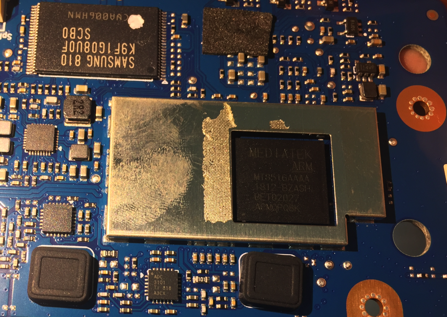
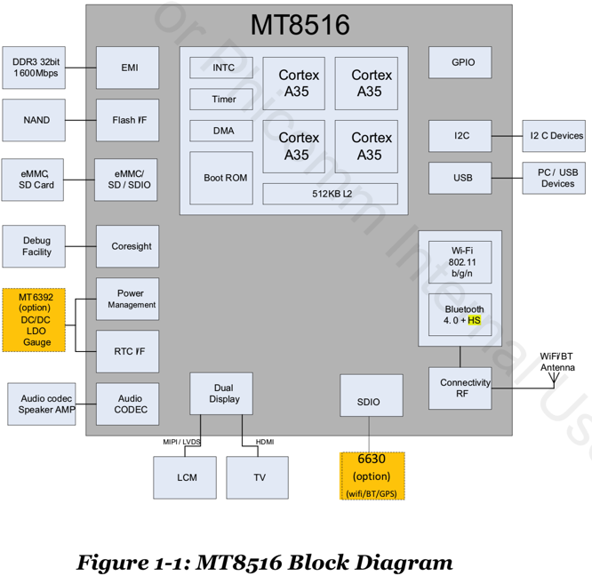
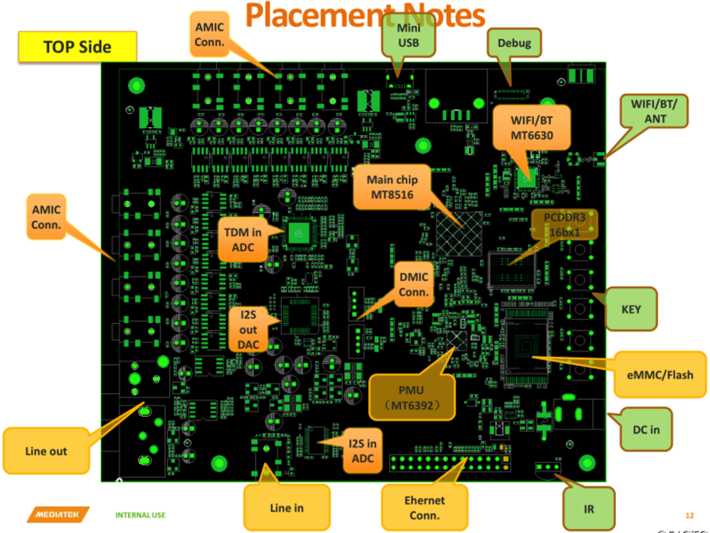
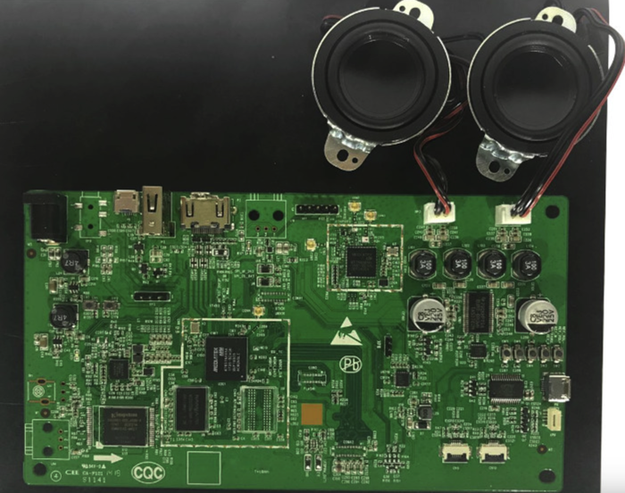
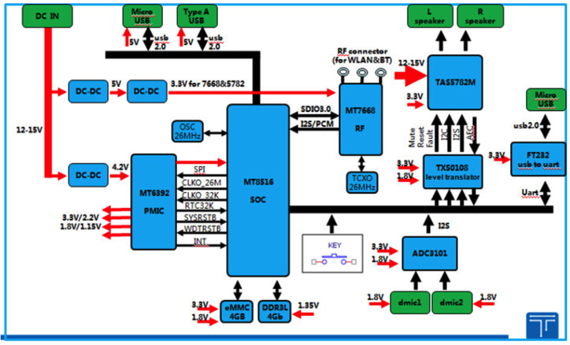

主控芯片
电子设备的大脑是主控芯片，往往也叫做：CPU，SoC等。
此处方糖的CPU是MTK MT8516
是从电路板：

上看到的信息是：

经过查询研究整理，得到CPU的信息：
天猫精灵方糖的Soc是：联发科 MTK MT8516
此处拆解的：天猫精灵方糖的主控芯片=CPU=SoC是：联发科 MT8516=MTK MT8516
芯片上面的marking打标是：
MEDIATEK
ARM
MT8516AAAA
1812-BZASH
BET02027
ACMQPQ8K
其含义，根据spec规范文档的解释：
- 核心：基于
ARM Part No=Part Number：MT8516AAAA- 另外也有：
MT8516AAAB
- 另外也有：
1812：Data Code=数据代码？BZASH中的S：Subcontractor Code=转包商编码- 此处的指的是 这款芯片供应给某一家，该家代号是
S- 如果找联发科内部人员问，应该能查到具体是哪家公司
- 此处的指的是 这款芯片供应给某一家，该家代号是
ACMQPQ8K：Lot ID？
从芯片角度的综述：MTK MT8516
MTK MT8516芯片本身参数：
- Platform Features
- AP
- 内核：
- 4核 Cortex-A35
- 频率：1.3GHz
- 指令集：
- 支持NEON：专门针对大规模到并行运算而设计
- SIMDv2
- VFPv4 ISA
- 支持NEON：专门针对大规模到并行运算而设计
- 缓存：
- L1：
- 指令缓存：32KB
- 数据缓存：32KB
- L2：521KB
- L1：
- 电压：支持DVFS(动态电压频率调整)
- 1.05V~1.31V
- 内核：
- 无线网络
- 主控芯片MCU：Andes N9
- 缓存：
- 指令缓存：48KB
- 数据缓存：40KB
- 缓存：
- 主控芯片MCU：Andes N9
- 外部存储接口
- 支持类型：
- LPDDR2
- LPDDR3
- DDR3/L
- DDR4
- 容量：最大2GB
- 总线带宽：32位
- 频率：最大800MHz
- 支持模式：
- 自刷新
- 局部刷新
- 支持低功耗
- 支持类型：
- 安全
- ARM TrustZone
- Storage
- Connectivity
- Operating conditions
- Package
- AP
- Multimedia Features
- Display
- Audio
- Speech
- HDMI transmitter
- Wi-Fi/Bluetooth Features
- Supports integrated Wi- Fi/Bluetooth
- Wi-Fi
- Bluetooth
MTK MT8516概况
MediaTek有一套领先的SoC设计，可以把digit数字部分和RF射频部分，整合到单一芯片内。 其中电源管理模块(PMIC) MT6392用于给各个模块供电。
MediaTek MT8516
- 集成了：
- 802.11 b/g/n
- 蓝牙4.0
- HS radios
- 无源设备IPD
- 主要用于：
- 有连接的，音频方案
- 整合了：
- 64位，4核 Cortex-A35，1.3GHz的ARM
- 丰富的存储接口：
- PCDDR3
- DDR4
- LPDDR3
- eMMC
- Raw NAND
- 加速研发和产品上市时间
- 提供了MMD (MediaTek Module Design)
- 用于快速验证电路图和PCB电路板的存储和电源设计
- 如果要求高端的WiFi (802.11ac)或蓝牙
- 可以配合：五合一无线SOC处理器MT6630
- 提供了MMD (MediaTek Module Design)
- 最大特点：
- 高性能
- 低功耗
- 良好的多媒体体验
MTK MT8516产品参数
- Audio Features
- Google Cast for Audio:Yes
- Cloud-connected Voice Assistants: Yes
- PowerAQ:Yes
- Interface:DMIC, Fast Ethernet, I2S, HDMI 1.4 with ARC, S/PDIF, TDM in/out
- Additional Features: I2Sx2 (4 channels), TDM (up to 8 channels), PDM inputs (2 channels), 2 channel audio DAC and ADC
- Connectivity
- Connectivity:Bluetooth, USB 2.0 with OTG, Wi-Fi
- Wi-Fi:b/g/n
- Bluetooth Version:4.2 (Low Energy)
- Processor
- CPU Type:ARM Cortex-A35
- CPU Cores:Quad (4)
- CPU Bit:64-bit
- CPU Frequency:1.3GHz
- Memory:LPDDR2, DDR3, LPDDR3, DDR3L, DDR4
MTK MT8516框架图

MT8615芯片本身中的各个模块的布局图：

产品和用途角度的综述：MTK MT8516
来自联发科官网更简洁的概述：
MT8516，是高度整合的应用程序处理平台，适用於使用 Google Cast 和 PowerAQ 的云端连结语音助理。
PowerAQ
- what：联发科技的智能调音工具
- can：支持信号流设计和音频参数调整，提供简单的 GUI 界面
- why：无需额外的 DSP 支持，优化音箱的音质，让产品的音质更具魅，实现媲美加装了高端DSP的效果
MT8516 是一个高效并高度集成的应用程序处理平台，具有不同的接口和连接，主要用于音频和麦克风的处理。它是为云端支持的语音助手设备、Google Cast 音频和搭载联发科技的 PowerAQ 产品而设计。
MT8516 集成了四核 64 位的 ARM® Cortex-A35 MPCoreTM ，其运行速度高达 1.3 GHz。除了原始的 NAND 支持之外，它还具有非常灵活的内存支持，包括 LPDDR2、LPDDR3、DDR3、DDR3L 和 DDR4，以适应不同的平台需求。 麦克风语音输入控制和连接的音频产品中包含 I2Sx2（4 个频道）、TDM（最多 8 个频道）和 PDM 输入（2 个频道）等广泛的接口。连接包括 USB 2.0 OTG、10/100 以太网 MAC、具有 ARC 的 HDMI 1.4 Tx、SPDIF 和嵌入式两声道音频 DAC 和 ADC。 MT8516 平台拥有该行业最先进的集成技术，包括 Wi-Fi（2.4GHz 802.11 bgn）和蓝牙，以及内置的射频单芯片。这不仅简化了设计，缩短了上市时间，还缩小了平台尺寸，从而让设备厂商有机会设计其更小、更高效的产品。
芯片MT8516的典型用途：
- 除了集成度非常高：
- 四核心64位ARMCortex-A35，主频达1.3GHz
- 内建WiFi802.11b/g/n和蓝牙4.0
- 还支持
- 高达8通道的TDM麦克风阵列接口和2通道的PDM数字麦克风接口
- -》非常适用于远场(Far-field)麦克风语音控制和智能音响设备
- 关于PDM，详见：
- -》非常适用于远场(Far-field)麦克风语音控制和智能音响设备
- PowerAQ调音工具
- 高达8通道的TDM麦克风阵列接口和2通道的PDM数字麦克风接口
- 所以常见用途和场景：AI语音识别及控制功能
- -》例如智能闹钟、火灾警报器及其他小型智能家用装置
- 注：目前智能音箱产品中，有超过70%采用了联发科的芯片
其他相关
另外也可以买基于MT8516的开发板去折腾物联网的开发。
比如：

系统架构图：
